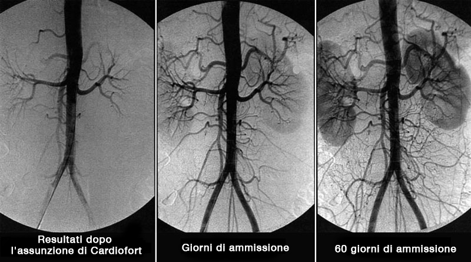

MEDICINA• ISTRUZIONI
Il dottore vi racconterà i rischi dell'alta pressione sanguigna in età avanzata
Quale soluzione è ideale per sciogliere le placche di colesterolo e migliorare la circolazione?
 |
Shigeaki Hinohara |

Milioni di persone trattano migliaia di malattie diverse con montagne di farmaci diversi, senza rendersi conto che la radice del male non è dove si trova il dolore. Il colesterolo è invisibile, si accumula silenziosamente, lentamente e impercettibilmente, soffocando tutti gli organi vitali.
Con l'accumulo di colesterolo nel corpo c'è un aumento a valanga del rischio di malattie legate alla stenosi o al blocco dei vasi sanguigni.
Quali sono i pericoli delle placche di colesterolo?
L'accumulo di colesterolo nelle pareti dei vasi sanguigni inizia attivamente dopo i 40-50 anni - con una velocità sorprendente. Le barriere di "colesterolo" formate, ostacolano il flusso sanguigno. La placca aterosclerotica si forma gradualmente e il diametro del vaso diventa sempre più piccolo. Questo aumenta notevolmente il rischio di un coagulo di sangue che blocca i vasi sanguigni. Quando questo accade, il sangue smette di fluire parzialmente o completamente verso un organo, con conseguente grave malfunzionamento o morte.

Il pericolo sta anche nel corso latente - asintomatico della malattia. Lo stato dei vasi si deteriora costantemente, e i disturbi si manifestano solo quando i vasi si sono già dimezzati. È impossibile dire esattamente come si manifesterà l'aterosclerosi; tutto dipende da quale organo è stato privato del nutrimento necessario. Più spesso l'aterosclerosi colpisce i vasi del cuore, dell'intestino, del cervello, dell'aorta, dei reni, degli arti inferiori e del pancreas.
L'accumulo di colesterolo (aterosclerosi) colpisce in modo distruttivo tutti gli organi e i sistemi del corpo. L'unica domanda è quale organo sarà "l'anello più debole" e non sopravviverà per primo.
7 obiettivi del colesterolo
Aterosclerosi aortica
L'aterosclerosi dell'aorta colpisce la più grande arteria del corpo. L'aorta assomiglia a un tronco da cui si diramano altri vasi più piccoli.
L'aorta comprende 2 sezioni:
- Pettorale
- Addominale
La sezione toracica fornisce sangue agli organi del torace, alla testa e al collo.
L'aorta addominale dirige il sangue agli organi situati nell'addome e alle estremità inferiori.

La malattia si sviluppa in 2 fasi:
- Nella fase iniziale, non ci sono manifestazioni apparenti della malattia. Ma le complicazioni già esistenti possono essere rilevate da test di laboratorio.
- Il periodo clinico è accompagnato da segni pronunciati della malattia.
Aterosclerosi dell'aorta toracica
Nella fase iniziale, la patologia non è accompagnata da alcun sintomo. I primi sintomi sono di solito dolori al petto che sono intermittenti. Il dolore può diminuire, aumentare e non andare via per diversi giorni. È spesso accompagnato da una sensazione di mancanza di respiro.
Altri sintomi includono l'aumento della pressione sanguigna e lo sviluppo dell'ipertensione.
Se l'arco aortico è significativamente danneggiato, ci sono difficoltà nella deglutizione e la voce diventa rauca. Le lesioni aterosclerotiche dell'aorta toracica possono essere accompagnate dalla crescita di peli sulle orecchie. Appaiono lesioni grasse sul viso e si verifica un ingrigimento prematuro.
Altri sintomi di lesione dell'aorta toracica:
- Dolore che si estende al braccio, alla colonna vertebrale cervicale e lombare;
- Pressione sanguigna alta;
- Battenti tra le costole sul lato destro del petto;
- Rumore nella testa;
- Vertigini;
- Dolore alla cervicale durante lo sforzo.
Le seguenti patologie si sviluppano sullo sfondo di un insufficiente apporto di sangue al cuore:
- Aritmia;
- Insufficienza cardiaca;
- Angina pectoris;
- Attacco cardiaco.
Le lesioni aortiche toraciche sono spesso accompagnate da lesioni coronariche aterosclerotiche e lesioni vascolari cerebrali.
Aterosclerosi dell'aorta addominale
La lesione aterosclerotica dell'aorta addominale è accompagnata da disturbi del sistema digestivo e si manifesta con i seguenti sintomi:
- Dolore addominale. Hanno un carattere di attacco. Spesso il paziente non è in grado di individuare la posizione esatta del dolore;
- Disturbi alle feci;
- Meteorismo;
- Bruciore di stomaco;
- Rutti e una nota di amaro;
- Trombosi dell'arteria viscerale. Una pericolosa complicazione che può essere fatale. È accompagnata dalla necrotizzazione delle anse intestinali e da un'estesa infiammazione. La condizione è accompagnata da un dolore molto forte, che non può essere alleviato dagli antidolorifici.
A causa della formazione di placche in quest'area, l'apporto di sangue agli organi pelvici è ridotto. Le complicazioni successive possono includere l'insufficienza renale e la malattia delle arterie viscerali.
Vasi cerebrali
Il colesterolo, che porta all'aterosclerosi cerebrale, distrugge i vasi intracranici ed extracranici. L'intensità dei sintomi patologici è direttamente correlata al grado e alla posizione delle lesioni.
Oltre alla complicazione più pericolosa- ictus, si può osservare l'inibizione del sistema nervoso centrale, lo sviluppo di disturbi mentali, disturbi della vista e della memoria.

I primi segni della patologia appaiono in un'età matura di 40-45 anni.
A questo punto, è possibile che ci siano delle "crisi ischemiche" accompagnati da disturbi della sensibilità, disturbi della coordinazione, anomalie della vista, dell'udito e del linguaggio. Nonostante la gravità dei sintomi, sono di breve durata, reversibili e scompaiono da soli dopo una sola pulizia dei vasi con i nutraceutici.
Le lesioni aterosclerotiche gravi possono portare all'ictus, cioè alla necrosi del tessuto cerebrale. I sintomi sono gli stessi del caso precedente, ma non c'è un miglioramento significativo dopo la necrosi.
Il cervello è responsabile delle più alte funzioni mentali. Pertanto, la formazione di placche porta anche al deterioramento dell'intelletto e della memoria, cambiamenti di carattere (labilità dell'umore, capriccio, pigrizia). In assenza di misure terapeutiche per liberare i vasi sanguigni dalle placche, questa lesione porta allo sviluppo della demenza, del morbo di Alzheimer. Tali complicazioni sono pericolose e possono portare alla disabilità o alla morte.
Esistono due tipi di ictus:
- Ischemico;
- Emorragico.
Ictus ha già raggiunto il limite di età. Non è più associato alla vecchiaia. L'ischemia è causata dal blocco del letto vascolare da parte di un trombo, la causa dell'emorragia è una rottura dei vasi cerebrali.
Cuore
Una delle cause di morte nei pazienti con malattie cardiovascolari dovute all'accumulo di colesterolo nei vasi sanguigni è il blocco dell'arteria coronaria principale.
Malattie come la malattia coronarica, l'angina pectoris e l'infarto del miocardio sono legati a questa lesione.
La malattia coronarica è una grave patologia del cuore, che è da considerarsi un intero complesso di disturbi. Include l'angina, l'infarto miocardico e la cardiosclerosi.

La manifestazione più comune della malattia coronarica è l'angina pectoris. Nella fase iniziale, le sue manifestazioni sotto forma di dolore al petto si verificano solo durante l'attività fisica. Questo è logico, perché a riposo il cuore richiede meno ossigeno, e durante l'attività intensa queste esigenze aumentano. Tale reazione può essere allo stress, all'angoscia emotiva. Quando l'aterosclerosi si sviluppa e la sovrapposizione del diametro del letto vascolare aumenta, la malattia coronarica diventa più pronunciata. Nelle fasi successive della malattia qualsiasi movimento del paziente provoca già dolore.
I segni classici dell'angina sono::
- la comparsa del dolore sia sotto sforzo che a riposo;
- il dolore si sente dietro lo sterno e può spostarsi alla spalla (lato sinistro), alla scapola, al braccio. Inoltre, l'intensità
- del dolore è direttamente collegata alla gravità dell'attacco;
- dolore acuto e schiacciante;
- è possibile controllare gli attacchi prendendo una compressa di nitroglicerina;
- la durata dell'attacco verrà ridotta: non più di 5 minuti.
La differenza tra un attacco cardiaco e l'angina:
- Dolore di altissima intensità;
- La durata è di almeno 20 minuti;
- La nitroglicerina non aiuta nell'infarto del miocardio;
- il dolore è molto intenso.
La placca causata da alti livelli di colesterolo può portare alla morte improvvisa di un paziente. Questa situazione si sviluppa quando, a causa di un malfunzionamento nella fornitura di sangue, prima cambia la frequenza cardiaca e poi il cuore si ferma.
Tutte le malattie cardiache sono gravi e pericolose. Senza un cuore perfettamente funzionante, gli altri organi non possono funzionare correttamente. L'aterosclerosi dei vasi cardiaci può anche portare a un infarto del miocardio. Un attacco cardiaco è causato quando una placca si rompe e un coagulo di sangue ostruisce il vaso. Di conseguenza, il sangue smette di fluire in una certa zona del muscolo cardiaco e questo muore.
Dopo la formazione del disturbo della contrattilità del muscolo cardiaco, la morte si verifica in poche ore o giorni. Tuttavia, anche se la persona viene salvata, ha ancora un'insufficienza di sangue che, senza liberare i vasi sanguigni dal colesterolo, porterà prima o poi a un secondo attacco. Pertanto, la pulizia dei vasi sanguigni con i nutraceutici è vitale per i pazienti che hanno avuto un attacco cardiaco.
Inoltre, sullo sfondo dei disturbi circolatori si sviluppa l'ipertensione. Questo è accompagnato da disfunzioni cardiache, processi patologici nel sistema nervoso centrale e nei reni.
L'ipertensione si verifica anche sullo sfondo di lesioni del cervello, dei reni, dei vasi sanguigni periferici. Nelle patologie del cervello si manifesta con una coscienza alterata, perdita della vista e compromissione della funzione renale, che porta all'insufficienza renale.
Vasi degli arti inferiori
Il complesso dei sintomi delle patologie degli arti inferiori che portano a depositi di colesterolo comprende:
- Sensibilità degli arti inferiori al freddo;
- Crampi;
- Zoppamento
- Ulcere trofiche, "reticolo" vascolare e "stelle" in seguito a lesioni cutanee;
- Vene varicose;
- Dolore che può verificarsi sia in attività che a riposo (può variare in intensità);
- Distruzione del tessuto cartilagineo, sviluppo dell'osteoartrite.
Oltre alle sensazioni dolorose, si verificano disturbi muscolo-scheletrici. Le manifestazioni sono simili a quelle di un disturbo cardiaco: nella fase iniziale, il dolore si verifica solo con grande sforzo fisico e lunghe passeggiate. Nell'ultimo stadio, il dolore diventa insopportabile anche a riposo.
La claudicazione intermittente è il sintomo principale quando si verificano lesioni vascolari. Le sensazioni dolorose sono principalmente localizzate nei muscoli della coscia e del polpaccio.
L'insufficiente apporto di sangue alle estremità inferiori provoca una pelle pallida e insensibile, e i peli sulle gambe cominciano a cadere. Le ulcere che si formano sono estremamente difficili da trattare, questo è dovuto al fatto che i processi rigenerativi non sono completamente attivati a causa della mancanza di sangue. Come risultato di tali cambiamenti, prima o poi inizia la cancrena: i tessuti muoiono. L'assunzione di farmaci in questa fase è inefficace. La cancrena può essere curata solo con l'amputazione.
Il trattamento include la terapia fisica e i trattamenti termali, oltre all'assunzione di nutraceutici destinati a combattere l'aterosclerosi.
Le arterie renali
Nelle lesioni aterosclerotiche dei vasi che forniscono nutrimento al rene, si sviluppa un'arteriosi secondaria. Tra le manifestazioni caratteristiche c'è l'edema, che si forma come risultato della ritenzione di sodio nel corpo, la situazione più grave è lo sviluppo dell'edema polmonare. Una delle conseguenze è l'infarto del rene. Quando il rene è colpito, i sintomi della malattia non sono pronunciati.
Il blocco dell'arteria renale da parte del colesterolo porta alla formazione di un'insufficienza renale acuta.
Le principali manifestazoni dell'aterosclerosi delle arterie renali sono queste:
- Ipertensione;
- Gonfiore;
- Mal di schiena localizzato;
- Debolezza, perdita di forze.
Come sbarazzarsi delle placche aterosclerotiche?
Il trattamento si basa sulla pulizia sistematica dei vasi sanguigni. Almeno una volta ogni 5 anni, a partire dai 40 anni per gli uomini e da 45 per le donne.
Fino a poco tempo fa, era impossibile sbarazzarsi delle placche aterosclerotiche esistenti; la terapia si basava sul rallentamento della formazione di nuove placche.
Ma tutto è cambiato con con la scoperta dei nutraceutici.
I moderni rimedi contro le placche di colesterolo (nutraceutici) permettono di pulire i vasi sanguigni a domicilio senza la supervisione di specialisti. È importante rispettare la durata del corso del trattamento. La durata effettiva del trattamento è di 1,5 mesi.
I nutraceutici rimuovono dall'89% al 97% dei depositi di colesterolo dai vasi sanguigni, dalle arterie e dai capillari entro 1,5 mesi. (Circa 3,7 kg)
Cosa sono le gocce Cardiofort?
Cardiofort - la più innovativa generazione di farmaci per il trattamento e la prevenzione dell'aterosclerosi vascolare.
Le gocce Cardiofort combinano efficacia e sicurezza nella lotta contro i depositi di colesterolo.
Le gocce Cardiofort sono approvate per l'autosomministrazione nel trattamento dell'aterosclerosi e dei suoi effetti.
Le gocce Cardiofort eliminano completamente gli effetti collaterali e le complicazioni, quindi sono raccomandate per gli anziani e le persone con malattie croniche.
Come agiscono i nutraceutici sul corpo?
Le gocce Cardiofort funzionano in 3 fasi:
- 1. Eliminazione dei depositi di colesterolo. Dissolve le placche aterosclerotiche, i coaguli di sangue e la calcificazione. Incrementa il lume dei vasi sanguigni e ripristina la circolazione del sangue.
- 2. Elimina gli effetti di una circolazione sanguigna insufficiente. Ipertensione, mal di testa, vene varicose, diabete di tipo 2, trombosi ed emorroidi sono completamente o in modo significativo curati. Gli acufeni e le vertigini scompaiono, l'acutezza visiva e la chiarezza mentale migliorano.
- 3. Migliorano la forza e l'elasticità delle pareti dei vasi sanguigni. Previene la formazione di nuove placche e riduce il rischio di ictus di 11 volte.
«Cardiofort»

"Cardiofort" è un prodotto nutraceutico di quinta generazione con un effetto unico, in grado di sciogliere fino al 97% dei depositi di colesterolo e di raddoppiare il lume dei vasi sanguigni, ripristinando la circolazione del sangue.
L'azione si basa sulla capacità delle molecole del principio attivo di penetrare nelle placche aterosclerotiche attraverso il rivestimento fibroso. Questo effetto fornisce la dissoluzione dei depositi di colesterolo, che era impossibile fino a poco tempo fa.
Assunzione del Cardiofort per 2 mesi 2 volte al giorno a stomaco vuoto dà i seguenti risultati:
- Elimina fino al 97% delle placche aterosclerotiche.
- Rafforza le pareti dei vasi sanguigni.
- Normalizza la pressione sanguigna.
- Stabilizza i livelli di zucchero nel sangue.
- Ripristina l'attività funzionale del cervello e del sistema nervoso.
- Arresta il processo di invecchiamento del muscolo cardiaco.
- Riduce il rischio di infarto miocardico.
- Migliora la barriera antiossidante.
- Migliora la circolazione coronarica e cerebrale.
- Normalizza il metabolismo minerale nel muscolo cardiaco.
Guardate da soli.
Gocce Cardiofort
Paziente
donna, 67 anni. All'inizio della terapia c'erano estese lesioni dell'aorta toracica e addominale con depositi di colesterolo. Disturbi circolatori degli organi addominali, dei polmoni e dei bronchi.
donna, 67 anni. All'inizio della terapia c'erano estese lesioni dell'aorta toracica e addominale con depositi di colesterolo. Disturbi circolatori degli organi addominali, dei polmoni e dei bronchi.
Complicazioni associate:
Ipertensione di grado III, edema delle estremità inferiori, vene varicose, aritmia, condizione prediabetica.
Ipertensione di grado III, edema delle estremità inferiori, vene varicose, aritmia, condizione prediabetica.
Lamentele del paziente:
mal di testa, vertigini, tinnito, dolore alle gambe e crampi, problemi di sonno, pressione fino alla crisi ipertensiva.
mal di testa, vertigini, tinnito, dolore alle gambe e crampi, problemi di sonno, pressione fino alla crisi ipertensiva.
Prescrizione:
Gocce Cardiofort 2 volte al giorno a stomaco vuoto. Visita di controllo dopo 30 giorni e 60 giorni.
Gocce Cardiofort 2 volte al giorno a stomaco vuoto. Visita di controllo dopo 30 giorni e 60 giorni.
Angiogramma vascolare generale del paziente

Risultati del trattamento
Sulla base di terapia di 2 mesi con Cardiofort sono stati ottenuti i seguenti risultati:
- La pressione sanguigna è tornata alla normalità 130-139 \ 85-89. Che è il limite massimo del normale.
- Non ci sono gonfiori.
- I livelli di zucchero non superano i 5,5 mmol/L
- Non si osservano segni di vene varicose.
- Aritmia non registrata, polso 73 bpm.
- I mal di testa e gli acufeni non danno fastidio dopo la prima settimana di assunzione del farmaco.
- Sonno normalizzato.
- Maggiore acutezza visiva.
- Il tono generale e il benessere sono migliorati considerevolmente
Il flusso di sangue al cervello è stato ripristinato
Paziente
Uomo, 51 anni. È stata osservata una significativa ostruzione della circolazione cerebrale all'inizio della terapia.
Uomo, 51 anni. È stata osservata una significativa ostruzione della circolazione cerebrale all'inizio della terapia.
Complicazioni associate:
pressione alta, opacità corneale, osteocondrosi cervicale e toracica, prostatite cronica, emorroidi acute, iperglicemia.
pressione alta, opacità corneale, osteocondrosi cervicale e toracica, prostatite cronica, emorroidi acute, iperglicemia.
Lamentele del paziente:
mal di testa, visione sfocata, visione offuscata. Debolezza generale e apatia, mancanza di volontà di fare qualcosa. Bassa efficienza, incapacità di concentrarsi a lungo, mancanza di energia.
mal di testa, visione sfocata, visione offuscata. Debolezza generale e apatia, mancanza di volontà di fare qualcosa. Bassa efficienza, incapacità di concentrarsi a lungo, mancanza di energia.
Prescrizione:
Gocce Cardiofort 2 volte al giorno a stomaco vuoto. Visita di controllo dopo 30 giorni e 60 giorni.
Gocce Cardiofort 2 volte al giorno a stomaco vuoto. Visita di controllo dopo 30 giorni e 60 giorni.
Risultati del trattamento
Sulla base di terapia con Cardiofort in 1,5 mesi
- Pressione sanguigna normale.
- Livelli di zucchero stabilizzati.
- I mal di testa sono scomparsi.
- Maggiore produttività e attività.
- Le energie sono aumentate in modo significativo.
- Le emorroidi sono sparite.
- Sono spariti i dolori alla schiena, al collo e alle articolazioni.
- Maggiore acutezza visiva.
- Nessun sintomo di prostatite.
Svantaggio principale di Cardiofort
L'unico e, di fatto, il principale svantaggio di Cardiofort è il suo prezzo.
È una cosa sensata perché i nutraceutici sono tra prodotti con alti costi di produzione. La composizione naturale è molto esigente in termini di condizioni di stoccaggio e preparazione, il che aumenta significativamente il costo di produzione.
Nella maggior parte delle catene farmaceutiche Cardiofort non è disponibile semplicemente perché è costoso. E i medici non corrono il rischio di prescrivere un farmaco così caro.
Una volta all'anno, il produttore di Cardiofort insieme alla Commissione internazionale anticolesterolo, organizzano Giornata promozionale Tutte le persone che hanno bisogno di liberare i vasi sanguigni, abbassare la glicemia e la pressione sanguigna possono ottenere Cardiofort ad un prezzo scontato.
Memorizzate questa data:
– È la giornata internazionale contro il colesterolo.
Potete ordinare le gocce Cardiofort ad un prezzo scontato, ma per farlo dovete soddisfare alcune condizioni.
Condizioni dello SCONTO del 50% su Cardiofort:
- Solo per uso personale
Questo per evitare di avere a che fare con rivenditori che cercano di comprare il PRODOTTO all'ingrosso e rivenderlo a loro vantaggio. - Fate domanda attraverso il sito ufficiale.
Acquisto attraverso il sito ufficiale è una garanzia di qualità e protezione dai rivenditori.
Quindi non rimandate, ordinate Cardiofort ora. In quanto non potrà acquistare l'articolo ad un prezzo scontato il domani.
RECENSIONI